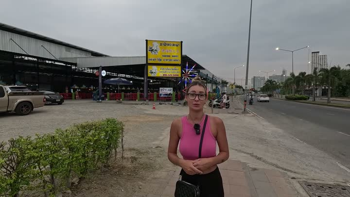

Атлас мест · Паттайя, Таиланд
Апа Талай (Apa Talay Pao & BBQ Buffet Jomtien)

Наш отзыв
Апа Талай — любимая нами безлимитная буфет-ресторан в Паттайе. Здесь горы свежей еды: мясные блюда, морепродукты, салаты, десерты и мороженое. Особенно впечатляют свежие устрицы, креветки и разнообразные виды мяса. Можно самому приготовить блюдо на гриле или выбрать готовую еду. Атмосфера приятная, обслуживание быстрое. Однако в 2026 году заметили ухудшение сервиса: странные правила рассадки и меньший выбор блюд.
Последний раз были здесь: 20 февраля 2026
Что взять — мы пробовали
- устрицы
- креветки
- мясо
- морепродукты
Цены — на момент съёмки
- безлимитный буфет — 399 бат (2026)
- буфет — 399 бат (2025)
Совет: Выбирайте столик подальше от дороги и поближе к вентиляции.
Где это
12.880558899999999,100.8887275
Смотреть в наших роликах
Горы еды | Безлимитный буфет Apa Talay, лучший в Паттайе | Паттайя 2024
26 апреля 2024 · место с 0:00 · все места ролика
Безлимитка Апа, ешь от пуза! Встреча с родственниками в Паттайе. Таиланд сезон 2025
16 ноября 2024 · место с 7:56 · все места ролика
ВСЁ включено за 399 бат!Морепродукты, гриль и пир навесь ЖИВОТ😁
8 августа 2025 · место с 0:33 · все места ролика
Безлимитный буфет за 399 бат Испортился?! Раньше было вкусно, теперь — нет
20 февраля 2026 · место с 1:03 · все места ролика
Рядом из нашего атласа
Атлас мест канала «Юля и Дима / БЕЗ ТОРМОЗОВ». Описания составлены по нашим роликам; цены — на момент съёмки. Нашли неточность — напишите нам в Telegram.